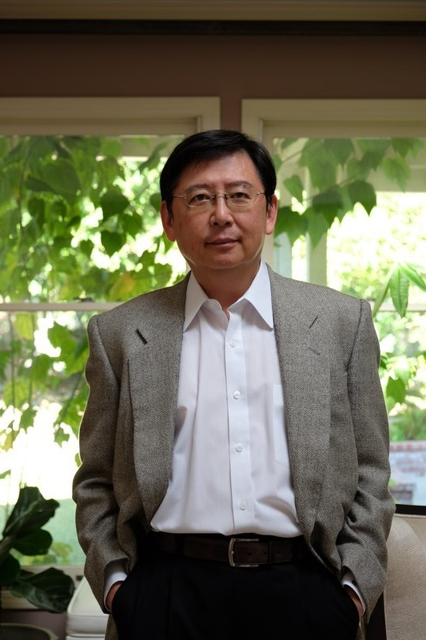
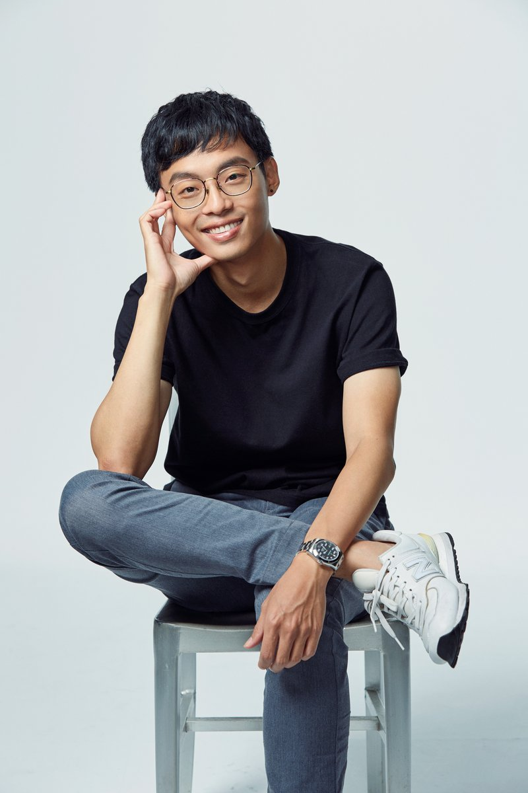

橘子蘋果程式學苑成立於 2012 年，是台灣規模最大的兒童程式教育機構之一。
我們提供從 Scratch 到 AI 的完整課程體系，
服務遍及全台 12 個縣市，累計超過 10 萬名學生、500 位以上資深師資，
兒童程式教育經驗逾 14 年。
我們相信：程式教育的核心，不是學會一種語言，而是學會一種思考方式——
用邏輯解決問題，用創造面向未來。
2012 年夏天，有感於台灣資訊教育的匱乏，一位長期旅居矽谷的軟體人，在家鄉成立了第一個兒童資訊教育團隊：橘子蘋果程式學苑。
四千多個日子過去了，從數萬名學生的笑臉中，我們看見他們提升了自信、更勇於創造，同時掌握了這個時代最重要的科技運用能力。
從家鄉的一個小團隊，慢慢成長為全台最大的兒童程式教育機構。家長的信任以及孩子的收穫，就是我們成長最棒的養分。

在矽谷軟體業工作多年，深刻理解台灣與美國年輕人才的差距。發現台灣孩子到了職場才開始真正面對產品、學習如何解決問題，於是毅然返台，致力將矽谷的創新風氣以及科技知識帶給台灣的孩子——「資訊時代，是英雄出少年的時代。」

深知初學者學習程式的認知歷程及盲點，多次受邀至國家教育研究院、各縣市資訊教育輔導團、親子天下教育年會分享。認為教育是國力的基石，以培養下一代的問題解決能力為使命——「面對新時代、新科技，我們要用新思維做教育。」
// 費用、年齡建議、排課方式等問題 → 常見問題頁面